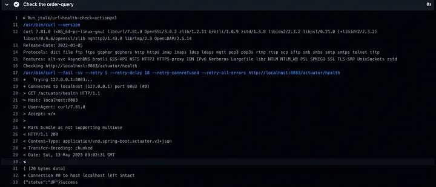

The First Step Toward True Continuous Delivery¶
Run End to End Test in PR check by GitHub Action¶
{kind=link}
This article will cover the first step for achieving True Continuous Delivery: How to gain more confidence when merging code into the main branch. The answer is always more tests, more specifically, more automated tests. Unlike the unit test, the E2E (End to End) test is more approximate to the real environment, which gives more confidence when it is passed.
So I want to add an E2E test when opening a PR (Pull Request) as a PR check. that can make sure my code change will not break the existing business logic.
How to implement it? Here is my proposal for the PR-triggered workflow:
- Checkout code
- Build and Run The Cluster using docker-compose to run all the project applications and dependency components (e.g. DB, Kafka, Redis, etc.)
- Run the E2E test (either by running Postman collection or other tools)
- Clean up the Cluster
If you want to give it a try but don’t want to trigger on GitHub, please refer to my article about testing GitHub Action locally.
Background¶
CD (Continuous Delivery) is the highest pursuit for software development. In a narrow sense to say CD is to achieve that: once we merge the PR into the main branch of the repo, after running through a lot of automation pipeline/test, the code/artifact should be deployed in the production environment and facing the real user.
No manual tests, no code freeze, and no one need to sign the release. It also can faster the release and feedback cycle. plenty of advantages I didn’t mention yet. Sound fancy right?
Lots of advantages come with lots of work and issues: automated test, security test, rollback, and revert… there are a lot of aspects that should be discussed. There is one awesome presentation talk about these topics, which was given by Roy Osherove. This article is inspired by his talk also.
The Pipeline-Driven Organization • Roy Osherove • GOTO 2022
Implementation¶
I plan to use Github Action to implement the workflow I proposed since it’s a modern, community-supported, and well-integrated (with Github) CI (Continuous Integration) tool around the market.
¶
Workflow setting and Checkout Code Easy peasy, Just reference to the official action and modify like below:
name: E2E Test
on:
pull_request:
branches: [ "master" ]
permissions:
contents: read
jobs:
e2e-test:
runs-on: ubuntu-latest
steps:
- name: Checkout code
uses: actions/checkout@v3
Build and Run The Cluster¶
The detail in this step may differ from the language we use. But the Whole concept is to build the artifact (in my grade spring boot project is the .jar file). Then use the docker-compose to start the application. Besides, we can use also run the dependency component like DB, Kafka, or Redis before we run the applications.
The steps .yaml will be like the below:
...
- name: Set up JDK 17
uses: actions/setup-java@v3
with:
java-version: '17'
distribution: 'temurin'
cache: 'gradle'
- name: Build with Gradle
run: ./gradlew build -x test --no-daemon
- name: Run The Cluster
run: docker compose -f Docker/boot-run-apps-docker-compose.yml -f Docker/kafka-docker-compose.yml --env-file Docker/config/.env.docker -p event-sourcing up -d
...
Here, I use the official setup action and then build the project (ignore tests by -x test, since we focus on the E2E test here, we will run the unit test in another workflow)
Two notable things are:
- we must run the
docker compose upin background mode (with -d option). Otherwise, the action will be stuck in this command( since the process is occupied bydocker-compose up) - If using the GitHub free plan, then we can only run on a 2-core runner, so we have to reduce the number of containers started in docker-compose (I passed the test until reducing it to 3 containers ).
Then we can take a look at the docker-compose .yaml for application and Kafka (the only dependency component in my project).
The boot-run-apps-docker-compose.yml like below:
version: "3.9"
services:
order-command:
image: openjdk:19-slim
extra_hosts: [ 'host.docker.internal:host-gateway' ]
depends_on:
- kafka
env_file:
- ./config/.env.docker
volumes:
- "../:/app"
ports:
- "8081:8081"
working_dir: /app
command: java -jar order/command-side/build/libs/command-side-0.0.1-SNAPSHOT.jar
order-query:
extra_hosts: [ 'host.docker.internal:host-gateway' ]
depends_on:
- kafka
image: openjdk:19-slim
ports:
- "8083:8083"
env_file:
- ./config/.env.docker
volumes:
- "../:/app"
working_dir: /app
command: java -jar order/query-side/build/libs/query-side-0.0.1-SNAPSHOT.jar
And the kafka-docker-compose.yml like below:
version: "3"
services:
kafka:
image: 'bitnami/kafka:${KAFKA_TAG:-latest}'
extra_hosts: [ 'host.docker.internal:host-gateway' ]
ports:
- '9092:9092'
environment:
- ALLOW_PLAINTEXT_LISTENER=yes
- LOG_RETENTION_HOURS=26280
In this way, we can run all application and dependency components on the GitHub action runner.
Run The E2E test¶
Before executing the E2E test, we should make sure our target server is on and ready to respond to requests. Since we run the docker-compose up -d in background mode, we won’t know when the containers are running (some dependency images needs to be pulled first). And after the container is running, we also need to wait for our Spring Boot applications to initialize. So here I use jtalk/url-health-check-action to make sure the target server is ready.
- name: Check the order-query
uses: jtalk/url-health-check-action@v3
with:
url: http://localhost:8083/actuator/health
max-attempts: 5
retry-delay: 12s
retry-all: true
- name: Check the order-command
uses: jtalk/url-health-check-action@v3
with:
url: http://localhost:8081/actuator/health
max-attempts: 5
retry-delay: 12s
retry-all: true
The action will run like the below picture. I think it’s very convenient and straightforward. 
{kind=link}
After making sure the server is running, we can now execute our E2E test. There are plenty of ways to do so. Here I choose to use matt-ball/newman-action. It’s an action for running “newman”, a CLI command for running the postman collection.
...
- name: run Postman Collection
uses: matt-ball/newman-action@master
with:
collection: postman/OrderCommand.postman_collection.json
...
So, all I need to do is to prepare a Postman collection with tests in it. Then export as .json file and add it to my repository (it’s a long JSON file, so I provide the link here).
{kind=link}
{kind=link}
The action will run like the below picture. It’s much easier than installing node.js and newman CLI manually as this article suggested.
{kind=link}
Here we can see that the E2E test is executing successfully and there is no fail test. So I can have more confidence that my code change in PR is good enough and ready to go live.
Clean up the Cluster¶
The final important thing is to clean up what we have done. since we run the cluster up in background mode, we should make sure that we stop it (otherwise the free limit of GitHub Action runner minutes might be gone in just a few days, not sure, but I don’t want to try).
- name: clean docker compose
if: always()
run: |
docker compose -f Docker/boot-run-apps-docker-compose.yml -f Docker/kafka-docker-compose.yml --env-file Docker/config/.env.docker -p event-sourcing down
the if: always() ensure this step will always be executed, no matter whether the previous steps succeed or failed.
Summary¶
This article wants to share the first step in achieving continuous delivery, which is to gain more confidence when merging code. This can be accomplished by adding more automated tests, particularly the E2E test, which are more approximate to the real environment and give more confidence when they pass.
I propose to implement E2E tests as a PR check triggered by Github Actions, using docker-compose to build and run the cluster, running E2E tests (by running Postman collection), and cleaning up the cluster. Here is the complete workflow.yaml file:
name: E2E Test
on:
pull_request:
branches: [ "master" ]
permissions:
contents: read
jobs:
e2e-test:
runs-on: ubuntu-latest
steps:
- name: Checkout code
uses: actions/checkout@v3
- name: Set up JDK 17
uses: actions/setup-java@v3
with:
java-version: '17'
distribution: 'temurin'
cache: 'gradle'
- name: Build with Gradle
run: ./gradlew build -x test --no-daemon
- name: Run The Cluster
run: docker compose -f Docker/boot-run-apps-docker-compose.yml -f Docker/kafka-docker-compose.yml --env-file Docker/config/.env.docker -p event-sourcing up -d
# test for estimate the health check parameters, can be ignore
- name: Check docker compose status
run: |
sleep 20
docker ps
docker logs event-sourcing-order-query-1
- name: Check the order-query
uses: jtalk/url-health-check-action@v3
with:
url: http://localhost:8083/actuator/health
max-attempts: 5
retry-delay: 12s
retry-all: true
- name: Check the order-command
uses: jtalk/url-health-check-action@v3
with:
url: http://localhost:8081/actuator/health
max-attempts: 5
retry-delay: 12s
retry-all: true
- name: run Postman Collection
uses: matt-ball/newman-action@master
with:
collection: postman/OrderCommand.postman_collection.json
- name: clean docker compose
if: always()
run: |
docker compose -f Docker/boot-run-apps-docker-compose.yml -f Docker/kafka-docker-compose.yml --env-file Docker/config/.env.docker -p event-sourcing down
I’ve opened the related Pull Request (PR) in my personal repository, feel free to get more details and the complete code here.
Reference¶
https://www.youtube.com/watch?v=zmA5fhV-FGk https://www.linkedin.com/pulse/running-postman-collections-via-github-action-nirmala-jayasanka/